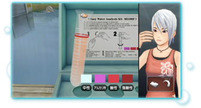
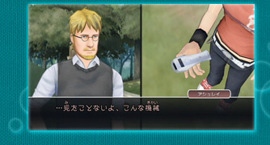
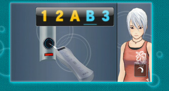
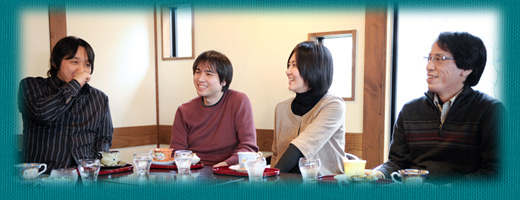

|
Ｗｉｉでアドベンチャーゲーム |
―― |
Ｗｉｉでアドベンチャーを出す上で気をつけたところは？ |
|
宮川 |
こだわったのは、片手で遊べるような操作の手軽さと、Ｗｉｉならではの面白さを作るところです。 |
|
齋藤 |
DS版『アナザーコード』は、DSならではの謎解きをいろいろと取り入れたアドベンチャーだったのですが、今回はＷｉｉリモコンならではの新しいネタを用意しています。 |
|
鈴木 |
Ｗｉｉリモコンをいろいろなものに見立てる謎解きもあり、例えば、公式ホームページで紹介しているように、Ｗｉｉリモコンを試験管に見立てて振ったりします。 |
 |
齋藤 |
アドベンチャーゲームを楽しむ上で、ゲーム中のキャラクターとプレイヤーの動きが繋がっているというのは、物語に入り込むためにとても効果的ではないかと考えました。 |
|
吉良 |
「Ａボタンを押してください」というような操作の説明もあえて入れていません。画面右側にいるアシュレイの動きを見て、アシュレイと自分を重ねて操作方法を考えてみてください。 |
|
―― |
自分を重ねる操作といえば、今回はＷｉｉリモコンに似たアイテムも登場しますね。 |
鈴木 |
DS版では「DAS」というDSに似た小型端末が登場しました。今回も同じように、プレイヤーの方が操作に使うＷｉｉリモコンをゲーム中に出せないかと考えました。 |
宮川 |
Ｗｉｉリモコン自体をもっと直接的に使えること、そして同じフォーマットだけれども、全編を通して、何度も繰り返せる謎解きを考えたかったんです。そこで思いついたのがＷｉｉリモコンにそっくりの機械「RAS」です。 |
鈴木 |
当初は「Ｗｉｉリモコンが鍵になる」というキャッチコピーで企画書を作っていましたが、文字通りＷｉｉリモコンにそっくりの機械「RAS」が、ゲームの「ひとつの鍵」になっています。 |
齋藤 |
この「RAS」を使った謎解きは、自分で考えれば解けるというギリギリの難しさにしています。詰まっても諦めずにいろいろと試してみてください。 |
 |
|
―― |
他にもこだわった部分はありますか？ |
生田 |
Ｗｉｉならではという訳ではありませんが、世界観を壊さないという部分では、プレイする際にすっとゲームの世界に戻ってこられるように、ゲームを再開するとこれまで自分が何をしていたかがわかるあらすじを表示するようにしています。 |
鈴木 |
ところで、私と生田さんは、作家と編集者のような役割関係でしたね。ゲームには出てこない確認のための年表を作るのですが、それにも生田チェックが細かく入ったり（笑）。 |
生田 |
逆にストーリー上、隠しておきたい部分をなんでもかんでも言ってしまいそうになることもありました。私が突っ走り過ぎると齋藤と吉良から「そこは言わなくてええやん」と止められてしまって（笑）。 |
 |